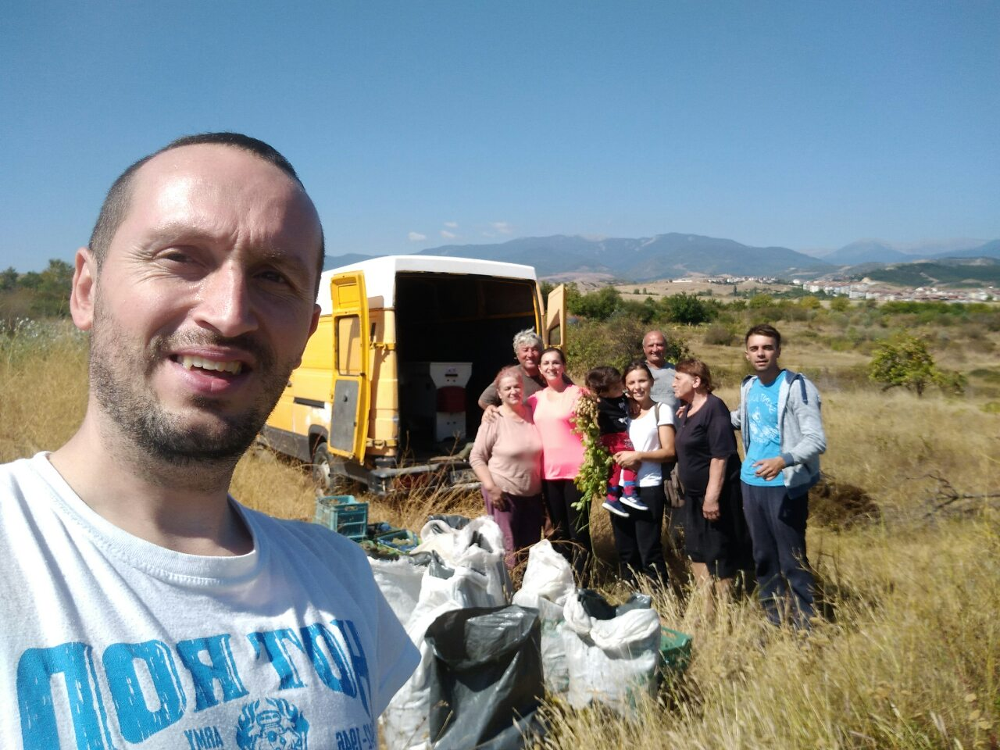
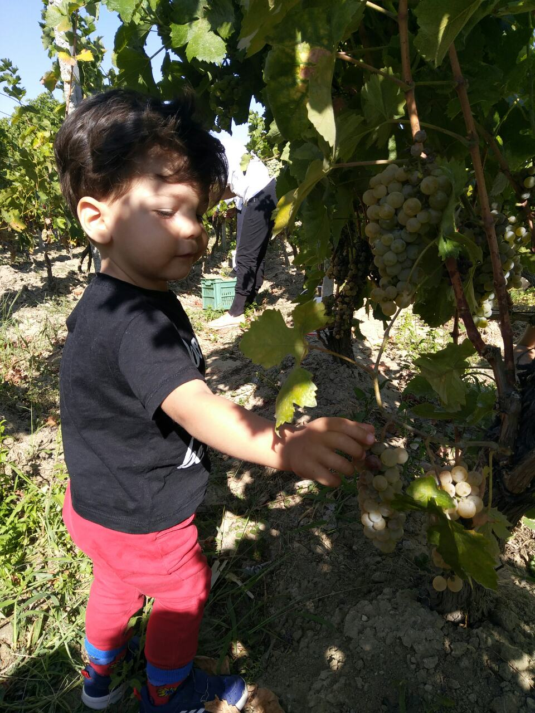
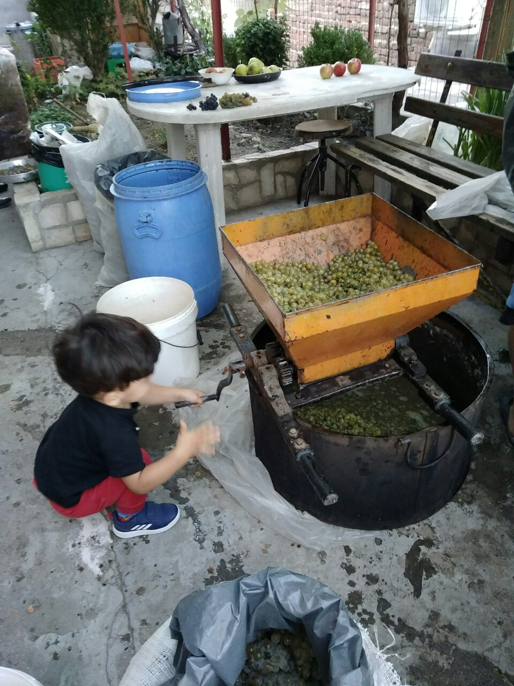
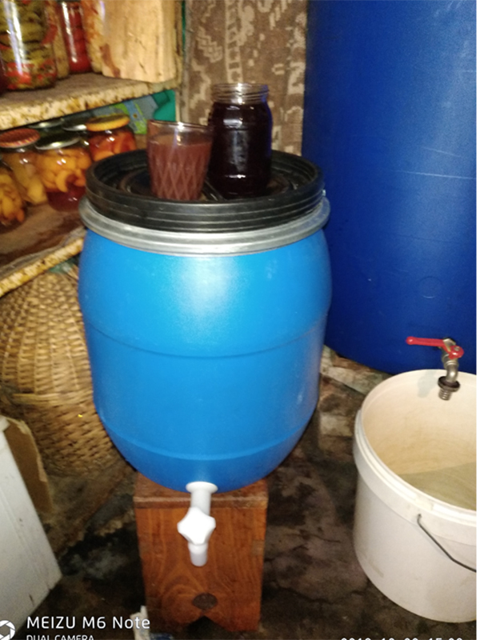

Време е за #реколта2019 на изба "Шар планина"
Неусетно измина цяла година от момента, когато започнахме да се наслаждаваме на предишната реколта и да отваряме бутилка след бутилка. Броят на пълните бутилки постепенно се стопи до нула и добре че дойде време за новата реколта. А #реколта2019 на изба "Шар планина" се очертава като не по-слаба от миналогодишната. Ето как протече производството й:
Простете неглижирания ни външен вид, но гроздоберът е особен процес, който изисква и по-вехтите дрехи от гардероба да влезат в употреба. Оставяме официалното облекло за трапезата
Гроздоберът
На фона на голямата суша през годината, реколтата от грозде в нашите скромни насаждения от около 1 декар беше напълно задоволителна. Дали заради правилно пръскане и обработка на лозява, или заради осигурените редовни поливки, но количеството грозде през 2019-та беше съизмеримо с това през предходната година. Затова гроздоберът премина с позитивно настроение на берачите и леко като песен. Като детска песен...
Защото тази година се радвахме на безценната допълнителна подкрепа на двама големи и един малък гроздоберачи. А те беряха ли, беряха... и не само.
Ред по ред, гроздето беше обрано, а това, което не беше изядено, постъпи в чувалите. Предстоеше да поеме по пътя към бидоните.
Обработката и ферментацията
Който не е присъствал на гроздобер, само той си мисли, че всичко приключва "на тръстиката". О, не. Предстои не по-леката чест със роненето, смилането и пренасянето на гроздето към избата - в нашия случай зимника, или просто мазето. Добре че и тук имаше кой да помага, при това доста усърдно и с огромен ентусиазъм.
Разбира се, бялото и червеното грозде се мелят поотделно, като предварително са изронени само зърната. Смилат се на машина, за да се отдели и сока на зърната, и се прехвърлят в големи съдове, където кашата ферментира.
Процесът на ферментация е нещо като чудо, щото сладкият сок постепенно се превръща във вино, а как точно става това и какви са тънкостите, трудно бихме могли да обясним. А и тук си има майсторлък.
Цялата ферментация протича бавно, първоначално е бурна, след това постепенно затихва, а за да се получи пивко и бистро вино, е необходим период от поне 1 месец. Ако времето се задържи топло, ферментацията се удължава и до пълно избистряне и придобиване на годен за консумация на виното вид може да се наложи да се изчака и 2 месеца. Търпение трябва, търпение.
Новото попълнение в нашето портфолио
През тази година решихме да се пробваме и в производството на розе. Затова #реколта2019 на изба "Шар планина" ще бъде допълнена и с розе. Макар и минимално количество, то заема полагащото му се място и в избата.
Производството на розе има много важни особености и, разбира се, своите тънкости. Сокът престоява смо няколко часа в кашата, след което се изчежда и ферментира самостоятелно. Ние заложихме на сорта 'широка мелнишка лоза' като суровина, защото е характерен за района ни и се счита за един от най-подходящите за производство на розе, редом с мавруда.
Ако експериментът се окаже успешен, в #реколта2020 ще включим по-голямо количество от светлочервения еликсир, който, изстуден, е прекрасна алтернатива на бирата през лятото.
*Този сайт е любителски, създаден като работен проект, с който авторът завършва курс за уеб-разработки. Сайтът няма за цел нито да рекламира, нито да дистрибутира напитки, а единствено да представи интересни данни при производството на вино.